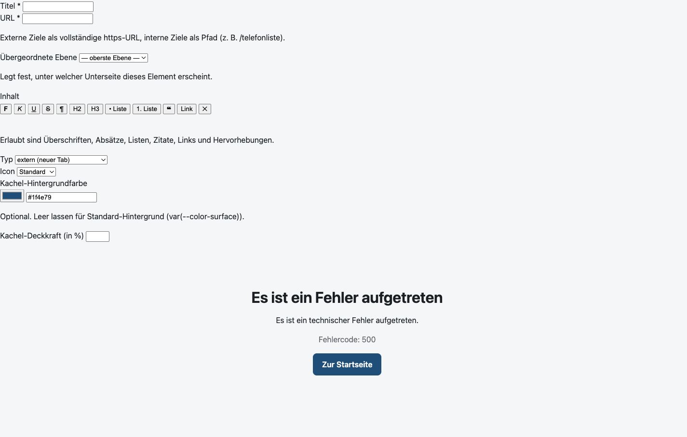

Betrieb, Konfiguration und Verwaltung: Installation, Navigation, Inhalte, Design, Active Directory, Alarmierung, Zugangscode, SNMP, Statistik, Benutzerverwaltung und Sicherung.
Version 1.0 · Stand: September 2026
Zielgruppe: IT-Administration und Redaktion
1 Einleitung und Überblick
Die Intranet-Landingpage ist eine schlanke Webanwendung (PHP 8.3, ohne Framework,
MySQL/MariaDB) und wird vollständig über Docker Compose betrieben. Sie stellt den
Beschäftigten eine zentrale Startseite mit Navigationskacheln, Telefonliste, Mitteilungen, Alarmierungen
und Textseiten bereit. Die Inhalte werden über einen geschützten Adminbereich gepflegt.
Datenbank: eine MySQL-Datenbank (intranet) mit Tabellen für Navigation, Telefonbuch, Links, Notfallnummern, Mitteilungen, Einstellungen, Benutzer und Klickstatistik.
Speicher: ein Docker-Volume app_storage für hochgeladene Dateien (Logo, Hintergrundbild) und Protokolle.
2 Installation und Betrieb (Docker)
2.1 Voraussetzungen
Docker Engine und Docker Compose (Plugin v2).
Freie Ports für Webapplikation und optional phpMyAdmin.
Zugriff auf den MySQL-Container-Image (mysql:8.0) beim ersten Start.
Assistierte Installation
Statt der manuellen Schritte 2.2 und 2.3 kann ./scripts/install.sh verwendet werden. Der
menügeführte Assistent prüft die Voraussetzungen, installiert fehlende Pakete (u. a. Docker und
Compose), kopiert .env.example nach .env, fragt alle Passwörter und Secrets ab,
startet die Container und legt einen Abschlussbericht für die Dokumentation unter
install-reports/ ab. Details: docs/installation.md.
2.2 Konfiguration anlegen
Legen Sie im Projektverzeichnis eine Datei .env an. Eine vollständige Referenz aller
Variablen finden Sie in Kapitel 18. Pflichtfelder sind insbesondere die Datenbankpasswörter:
Sicherheit
Ändern Sie das initiale Admin-Passwort nach der ersten Anmeldung umgehend (siehe Kapitel 16). Die Datei
.env enthält Zugangsdaten und darf nicht in die Versionsverwaltung aufgenommen werden.
2.3 Starten
docker compose up -d --build
Beim ersten Start führt der Container automatisch die Datenbank-Migration, die Grundbefüllung
(Beispiel-Navigation) und die Anlage des initialen Admin-Kontos aus.
2.4 Status und Stoppen
docker compose ps # Status der Dienste
docker compose logs -f app # Logs verfolgen
docker compose down # Dienste stoppen (Daten bleiben erhalten)
Tipp
phpMyAdmin starten Sie bei Bedarf zusätzlich über
docker compose --profile tools up -d.
2.5 Daten und Sicherung
Datenbank und hochgeladene Dateien liegen in den Volumes db_data und
app_storage. Für ein Backup sichern Sie die MySQL-Datenbank (z. B. über
mysqldump) sowie das Volume app_storage.
3 Anmeldung und Rollen
Der Adminbereich ist unter dem Pfad /admin erreichbar (z. B.
http://localhost:8080/admin).
Abb. 1 Anmeldeseite des Adminbereichs.
3.1 Anmelden
Rufen Sie /admin auf.
Geben Sie Benutzername und Passwort ein.
Bestätigen Sie mit „Anmelden“.
3.2 Rollen
Rolle
Berechtigung
Admin
Vollzugriff auf alle Module.
Redaktion
Nur das Modul „Wichtige Links“.
3.3 Schutzmechanismen
Sperre nach Fehlversuchen: Nach wiederholten Fehlanmeldungen wird der Zugang vorübergehend gesperrt.
Inaktivitätstimeout: Nach einer einstellbaren Zeit ohne Aktivität erfolgt die automatische Abmeldung.
CSRF-Schutz: Alle schreibenden Formulare sind mit einem Sitzungstoken abgesichert.
4 Dashboard
Nach der Anmeldung sehen Sie das Dashboard. Es fasst die wichtigsten Kennzahlen und den
Systemstatus zusammen.
Abb. 2 Dashboard mit Systemstatus, Telefonbuch, Navigation und Klickstatistik.
4.1 Kennzahlen
Systemstatus: Hinweise auf laufende Dienste, Version und Konfiguration.
Telefonbuch: Anzahl der aktiven und der eingeblendeten Einträge in der Telefonliste.
Navigation: Anzahl der Navigationselemente.
Klickstatistik: Zusammenfassung der erfassten Klicks.
Von hier aus gelangen Sie über die Seitenleiste direkt zu allen Modulen.
5 Navigation verwalten
Im Modul Navigation pflegen Sie alle Elemente der Startseite: Kacheln, Unterseiten,
Textseiten und externe Links. Die Ansicht kann als Liste oder als Baum
(Hierarchie) dargestellt werden.
Abb. 3 Navigationsverwaltung in der Listenansicht.Abb. 4 Navigationsverwaltung in der Baumansicht (Hierarchie).
5.1 Elementtypen
Typ
Verwendung
Externer Link
Verweist auf eine externe URL (öffnet in neuem Tab).
Interne Seite
Verweist auf eine interne Route, z. B. die Telefonliste.
Unterseite
Bündelt untergeordnete Elemente in einer eigenen Ansicht.
Textseite
Stellt ausführlichen, formatierten Inhalt dar.
Alarm
Löst beim Klick eine SMS-Alarmierung an eine Gruppe oder Einzelrufnummer aus.
5.2 Element anlegen oder bearbeiten
Wählen Sie „Neues Element“ oder „Bearbeiten“ bei einem vorhandenen Eintrag.
Füllen Sie das Formular aus (Titel, Typ, Ziel, Kurz- und Detailbeschreibung, Symbol, Farbe).
Speichern Sie.

Abb. 5 Formular zum Anlegen/Bearbeiten eines Navigationselements.
5.3 Sortierung und Hierarchie
Über die Sortierfunktion legen Sie die Reihenfolge der Kacheln fest. Mit dem Eltern-Element
(übergeordnetes Element) ordnen Sie Einträge einer Unterseite zu und bilden so mehrstufige
Strukturen ab.
5.4 Ein-/Ausblenden und Löschen
Elemente lassen sich über den Status-Schalter ausblenden, ohne sie zu löschen. Das Löschen entfernt den
Eintrag dauerhaft; untergeordnete Elemente einer Unterseite sollten zuvor neu zugeordnet werden.
5.5 Geschützter Zugriff
Jedes Element lässt sich als geschützt markieren. Geschützte Elemente verlangen beim
Aufruf einen Zugangscode, den berechtigte Personen per SMS anfordern (siehe Kapitel 13). Geeignet für
sensible interne Seiten und Alarm-Kacheln.
6 Wichtige Links
Das Modul Wichtige Links verwaltet die Sammlung häufig genutzter Verknüpfungen. Es ist
das einzige Modul, das auch Benutzern mit der Rolle Redaktion zur Verfügung steht.
Abb. 6 Verwaltung der wichtigen Links.
Jeder Link besitzt einen Titel, eine Zieladresse, ein Symbol und eine optionale Kurzbeschreibung. Die
Einträge erscheinen auf der Startseite in der Übersicht „Wichtige Links“.
7 Notfallnummern
Im Modul Notfallnummern pflegen Sie die wichtigen Notfall- und Störungsnummern, die den
Beschäftigten jederzeit schnell zur Verfügung stehen.
Abb. 7 Verwaltung der Notfallnummern.
Pro Eintrag werden Bezeichnung und Telefonnummer hinterlegt. Die Anzeige als anklickbarer Link wird
global im Modul „Beschreibungen“ gesteuert (siehe Kapitel 9).
8 Mitteilungen
Über das Modul Mitteilungen veröffentlichen Sie Ankündigungen, die den Beschäftigten
beim Aufruf der Startseite als Dialog eingeblendet werden.
Abb. 8 Verwaltung der Mitteilungen.
8.1 Verhalten
Eine aktive Mitteilung wird beim Öffnen der Startseite angezeigt.
Schließt eine Person die Mitteilung, wird sie erst wieder eingeblendet, wenn sich die Mitteilung ändert.
Mehrere Mitteilungen können zeitlich befristet (aktiv/inaktiv) geschaltet werden.
9 Beschreibungen und Texte
Das Modul Beschreibungen steuert die allgemeinen Seitentexte sowie die Darstellung der
Detailbeschreibungen der Kacheln.
Abb. 9 Modul „Beschreibungen“ mit Texteinstellungen und Beschreibungsübersicht.
9.1 Allgemeine Texte
Seitentitel und Untertitel der Startseite (Untertitel optional ein-/ausblendbar).
Landing-Intro als einleitender Text (optional sichtbar).
Fußzeilentext.
9.2 Darstellung der Detailbeschreibungen
Legen Sie fest, wie die Detailbeschreibungen der Kacheln angezeigt werden: Beim Überfahren,
Aufklappen oder Beides. Per Tastatur und auf Touchgeräten bleibt die
Beschreibung immer über „Details“ erreichbar.
9.3 Telefonliste
Aktivieren oder deaktivieren Sie die Darstellung von Telefonnummern als anklickbare tel:-Links.
Dies betrifft die Telefonliste und die Notfallnummern.
9.4 Beschreibungen der Elemente
Die untere Tabelle zeigt Kurz- und Detailbeschreibung aller Navigationselemente. Die eigentliche Pflege
erfolgt je Element im Modul „Navigation“ (Kapitel 5).
9.5 Dokumentation
Über die Option Handbücher in der Anwendung anzeigen steuern Sie, ob die Links zum
Anwenderhandbuch (Fußzeile der Landingpage) und zum Administratorhandbuch (Fußzeile des
Administrationsbereichs) eingeblendet werden. Deaktivieren Sie die Option, werden beide Links ausgeblendet.
10 Design (Farben, Logo, Hintergrund)
Im Modul Design passen Sie das Erscheinungsbild der Startseite an: Farben für das helle
und das dunkle Farbschema, Logo und Hintergrundbild.
Abb. 10 Modul „Design“ mit Farb- und Dateieinstellungen.
10.1 Farben
Hintergrund-, Text- und Akzentfarben werden getrennt für das helle und das dunkle Farbschema gepflegt.
Änderungen wirken sich unmittelbar auf die Startseite aus.
10.2 Logo und Hintergrundbild
Logo: wird in der Titelleiste angezeigt (SVG optional, Größenlimit konfigurierbar).
Hintergrundbild: optionales Hintergrundbild der Startseite (Größenlimit konfigurierbar).
Hinweis
Hochgeladene Dateien werden im Volume app_storage abgelegt und sind daher Teil der
Datensicherung.
11 Active Directory / LDAP
Das Modul Active Directory verbindet die Anwendung mit Ihrem Verzeichnisdienst, um die
Telefonliste automatisch mit Benutzerdaten (Name, Abteilung, Telefon, E-Mail) zu befüllen.
Abb. 11 Modul „Active Directory“ mit Konfiguration und Sync-Protokoll.
11.1 Konfiguration
Die Verbindungsdaten (Server, Port, TLS, Basis-DN, Bind-Benutzer, Suchfilter, Attribut-Zuordnung)
werden über die Umgebungsvariablen LDAP_* gesetzt (siehe Kapitel 18). Änderungen erfordern
einen Neustart des sync-Dienstes.
11.2 Synchronisation
Ein Hintergrund-Worker (sync) synchronisiert die Daten in einem einstellbaren Intervall.
Über das Modul lässt sich die Synchronisation manuell anstoßen.
Das Sync-Protokoll zeigt den Verlauf und eventuelle Fehler.
Sicherheit
Verwenden Sie für die Anbindung ein dediziertes Dienstkonto mit minimalen Leseberechtigungen. Das
Bind-Passwort darf nicht in der Versionsverwaltung landen.
12 Alarmierung
Das Modul Alarmierung bündelt alle Einstellungen für die SMS-Alarmierungen. Alarm-Kacheln
(Navigationstyp „Alarm“, siehe Kapitel 5) lösen beim Klick eine SMS an eine Gruppe oder eine einzelne
Rufnummer aus.
12.1 SMS-Gateway
Tragen Sie hier die Verbindungsdaten des SMS-Gateways ein:
Host – Zieladresse des Gateways (Hostname oder IP, optional mit Port).
Benutzername – Zugangsname für das Gateway.
Passwort – wird nur gespeichert, wenn Sie eines eingeben („leer = unverändert“).
Alternativ lässt sich das Passwort ausschließlich über die Umgebung (ALARM_PASSWORD bzw.
Docker-Secret) hinterlegen.
12.2 Gruppen und Einzelrufnummern
Als Empfänger einer Alarmierung dienen Gruppen oder Einzelrufnummern.
Sie legen diese Ziele hier an und ordnen sie den Alarm-Kacheln in der Navigation zu:
Gruppe – eine Gruppennummer, an die das Gateway die Meldung verteilt.
Einzelrufnummer – eine konkrete Telefonnummer als Direktziel.
12.3 Verlauf
Jede ausgelöste Alarmierung wird mit Zeitpunkt, Meldungstext, Ziel, Modus (Gruppe/Einzelnummer) und
Status protokolliert. So lässt sich nachvollziehen, wann alarmiert wurde und ob der Versand erfolgreich war.
Sicherheit
Das Gateway-Passwort wird niemals angezeigt, exportiert oder protokolliert.
13 Aktivierungs-Rufnummern und Zugangscode
Geschützte Navigationselemente (siehe Kapitel 5.5) verlangen beim Aufruf einen Zugangscode,
den berechtigte Personen per SMS anfordern. Im Modul Aktivierungs-Rufnummern pflegen Sie,
welche Rufnummern einen Code erhalten dürfen.
13.1 Rufnummern pflegen
Legen Sie eine Rufnummer an (Bezeichnung und Telefonnummer).
Nur aktive Rufnummern erhalten einen Code.
Nicht mehr benötigte Nummern deaktivieren oder löschen Sie.
13.2 Ablauf für die Nutzenden
Beim Aufruf eines geschützten Elements erscheint die Zugangscode-Seite.
Die Person gibt ihre Rufnummer ein und fordert einen Code an.
Der sechsstellige Code wechselt täglich und ist standardmäßig 120 Sekunden gültig
(konfigurierbar über die Einstellung sms_code_timeout).
Nach fünf Fehlversuchen muss ein neuer Code angefordert werden.
Hinweis
Wird die eingegebene Rufnummer nicht in den Aktivierungs-Rufnummern geführt, wird kein Code versendet –
bewusst ohne Fehlermeldung, um keine gültigen Nummern preiszugeben.
14 SNMP-Überwachung
Die Anwendung stellt den Zustand ihrer Dienste und des AD-Synchronisations-Workflows über
SNMP (v2c) bereit. Im Modul SNMP pflegen Sie Community-String, Standort
(sysLocation) und Kontakt (sysContact) des Agents.
14.1 Konfiguration
Community-String – für den Produktivbetrieb unbedingt auf einen eigenen, starken Wert
ändern (Standard public).
Standort / Kontakt – werden als sysLocation und sysContact
ausgeliefert.
Der am Host veröffentlichte UDP-Port bleibt ausschließlich über SNMP_PORT konfiguriert
(Docker-Port-Mapping).
Geänderte Werte werden nach einem Neustart des snmp-Containers wirksam.
15 Statistik
Das Modul Statistik wertet die Klicks auf die Navigationselemente aus. Die Anwendung
erfasst jeden Klick auf eine Kachel und stellt die Verteilung grafisch dar.
Abb. 12 Klickstatistik mit Diagramm und Zeitraumauswahl.
15.1 Zeiträume
Wählbare Auswertungszeiträume: 3, 7, 14, 30, 90 und 365 Tage.
15.2 Datenhaltung
Die Aufbewahrungsdauer der Klickdaten ist über CLICK_RETENTION_DAYS konfigurierbar;
ältere Daten werden automatisch gelöscht.
16 Benutzerverwaltung
Im Modul Benutzer verwalten Sie die Konten für den Adminbereich, einschließlich der
Rollenzuweisung (Admin oder Redaktion).
Abb. 13 Benutzerverwaltung des Adminbereichs.
16.1 Konten anlegen und ändern
Legen Sie ein neues Konto an oder wählen Sie ein bestehendes.
Vergeben Sie Benutzername, Passwort und Rolle.
Speichern Sie.
Sicherheit
Vergeben Sie starke, individuelle Passwörter und beschränken Sie die Rolle „Admin“ auf einen kleinen
Personenkreis. Deaktivieren Sie nicht mehr benötigte Konten.
17 Sicherung (Export/Import)
Im Modul Sicherung erstellen Sie eine vollständige Sicherung der Anwendung und können
sie bei Bedarf wieder einspielen.
17.1 Export
Über „Sicherung herunterladen“ wird eine ZIP-Datei erzeugt, die Konfiguration,
Navigation, Inhalte und Einstellungen enthält. Bewahren Sie die Datei an einem sicheren Ort auf.
17.2 Import
Wählen Sie eine zuvor erstellte Sicherungsdatei aus.
Starten Sie den Import.
Die enthaltenen Daten werden eingespielt; Sie erhalten anschließend eine Erfolgs- oder Fehlermeldung.
Hinweis
Zusätzlich empfiehlt sich die reguläre Sicherung der Datenbank und der Dateiablage über
mysqldump und das Volume app_storage (siehe Kapitel 2.5).
18 Anhang: Konfigurationsreferenz
Die Konfiguration erfolgt über die Datei .env. Die wichtigsten Variablen:
18.1 Allgemein und Datenbank
Variable
Beschreibung
APP_NAME
Name der Anwendung.
APP_URL
Basis-URL der Anwendung.
APP_ENV / APP_DEBUG
Umgebung (production) und Debug-Modus.
APP_PORT / PMA_PORT
Externe Ports für App und phpMyAdmin.
DB_HOST, DB_PORT, DB_NAME
Datenbankverbindung.
DB_USER / DB_PASSWORD
Datenbankzugang.
DB_ROOT_PASSWORD
MySQL-Root-Passwort.
SEED_ON_START
Grundbefüllung beim Start (true/false).
18.2 Admin-Konto
Variable
Beschreibung
ADMIN_USERNAME / ADMIN_PASSWORD
Initiales Admin-Konto (wird nur angelegt, wenn noch kein Benutzer existiert).
18.3 LDAP / Active Directory
Variable
Beschreibung
LDAP_HOST, LDAP_PORT
Server und Port (z. B. 636).
LDAP_USE_TLS, LDAP_VERIFY_CERT
TLS aktivieren bzw. Zertifikatsprüfung.
LDAP_BASE_DN, LDAP_BIND_DN, LDAP_PASSWORD
Suchbasis, Bind-Benutzer und Passwort.
LDAP_FILTER
LDAP-Suchfilter.
LDAP_TIMEOUT, LDAP_PAGE_SIZE
Timeout und Seitengröße.
LDAP_SYNC_INTERVAL
Synchronisationsintervall in Sekunden.
LDAP_ATTR_*
Zuordnung der LDAP-Attribute (Name, Telefon, E-Mail, Abteilung usw.).
18.4 Sonstiges
Variable
Beschreibung
CLICK_RETENTION_DAYS
Aufbewahrungsdauer der Klickdaten in Tagen.
APP_SESSION_IDLE_TIMEOUT
Inaktivitätstimeout in Sekunden.
APP_MAX_LOGO_BYTES, APP_ALLOW_SVG_LOGO
Logo-Größenlimit und SVG-Erlaubnis.
APP_MAX_BACKGROUND_BYTES
Größenlimit Hintergrundbild.
APP_FORCE_SECURE_COOKIES
Secure-Cookies erzwingen (bei HTTPS).
18.5 Alarmierung / SMS-Gateway
Variable
Beschreibung
ALARM_HOST, ALARM_USERNAME
Host und Benutzername des SMS-Gateways (auch im Adminbereich pflegbar).
ALARM_PASSWORD / ALARM_PASSWORD_FILE
Gateway-Passwort (nur Umgebung bzw. Docker-Secret).
18.6 SNMP
Variable
Beschreibung
SNMP_COMMUNITY
Community-String des SNMP-Agenten.
SNMP_SYS_LOCATION, SNMP_SYS_CONTACT
Standort und Kontakt des Agents.
SNMP_PORT
Am Host veröffentlichter UDP-Port (nur Docker-Port-Mapping).
Nach Änderungen an .env müssen die betroffenen Dienste neu gestartet werden: